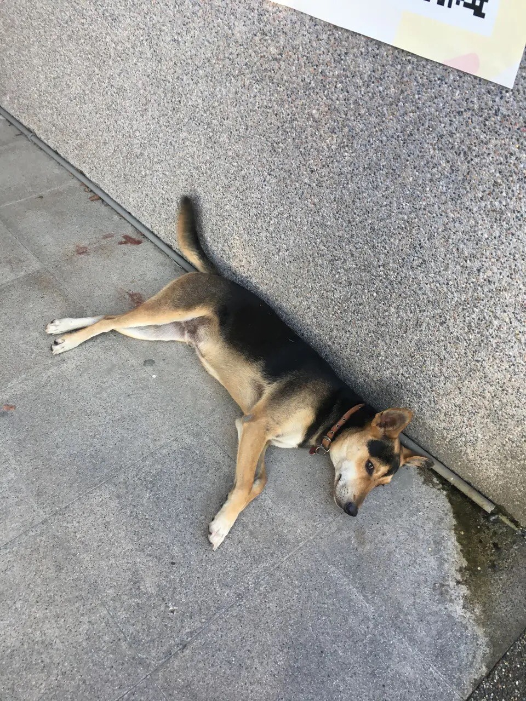
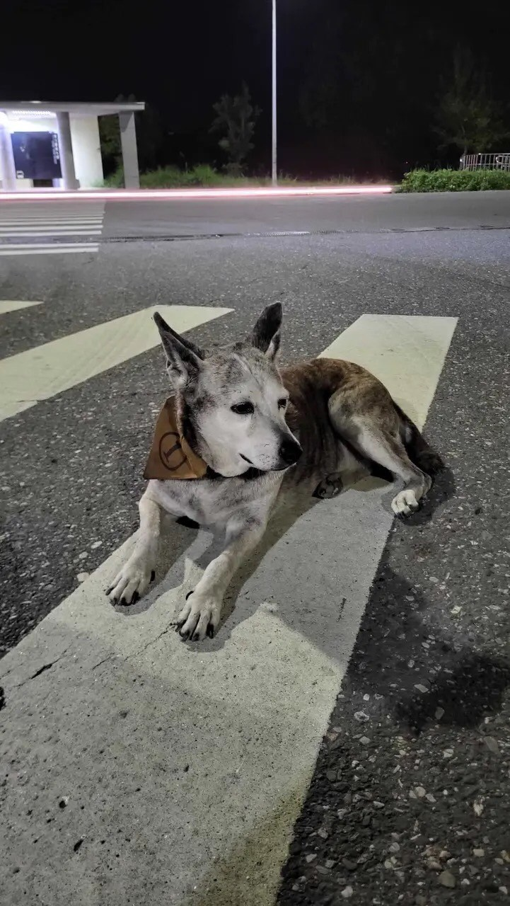
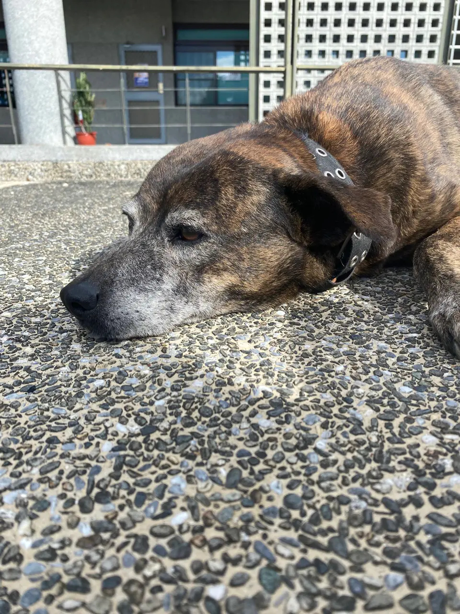
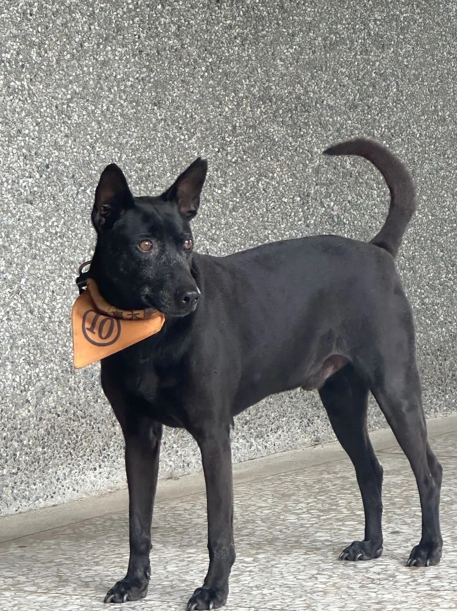
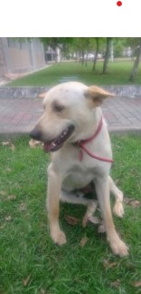

屁孩
| 特徵 | 黑棕色、公 |
|---|---|
| 年紀 | 10歲 |
| 個性 | 活潑好動、親人 |
小乖
| 特徵 | 底黃色背黑/中型 短毛/垂耳 母 |
|---|---|
| 年紀 | 4歲 |
| 個性 | 算是親人，但是比較 隨性，不會刻意討好 別人，但是給摸，別 的狗趕 牠 也不理 會，比較固執。 |
小花
| 特徵 | 虎皮肚白/中型 短毛/立耳 母 |
|---|---|
| 年紀 | 8歲 |
| 個性 | 因為年紀大了所以 反應很慢，吃飯也很 慢，很親人，喜歡別 人摸肚皮，如果看見 罐頭，會突然動作變 快。 |
二號
| 特徵 | 虎皮嘴黑/中型 短毛/垂耳 母 |
|---|---|
| 年紀 | 12歲 |
| 個性 | 比較怕人的狗，除非 你先摸小花和小黃 才會讓你靠近，平常 會在較遠的地方觀 望。 |
小黑
| 特徵 | 黑色/中型(胖) 短毛/立耳 母 |
|---|---|
| 年紀 | 3歲 |
| 個性 | 算是親人，但是個性 比較膽小，如果受到 驚嚇會夾著尾巴逃 走，常常會用無辜的 眼神，望著路人討 吃，太貪吃了所以很 胖。 |
皮蛋
| 特徵 | 白色/小型 短毛/立耳 公 |
|---|---|
| 年紀 | 10歲 |
| 個性 | 超級親人，和黑色那 隻是兄弟(推測)，喜 歡欺負牠，不過結紮 之後變得溫馴許 多，常常會在有人來 的時候，搶著撒嬌。 |